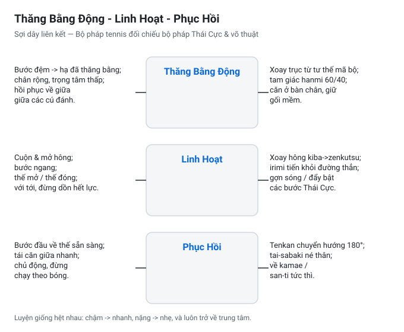
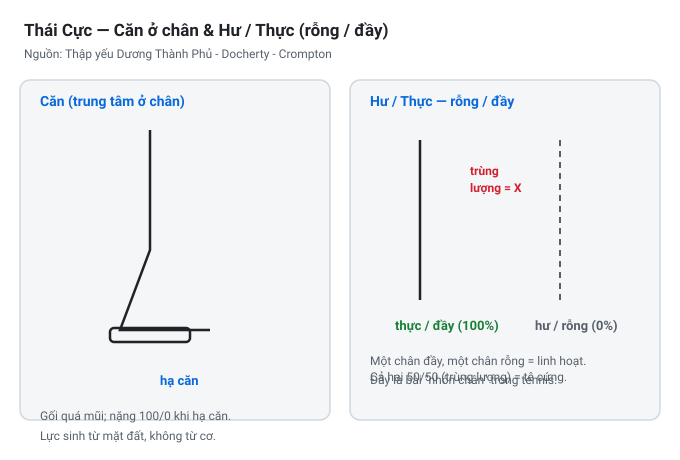
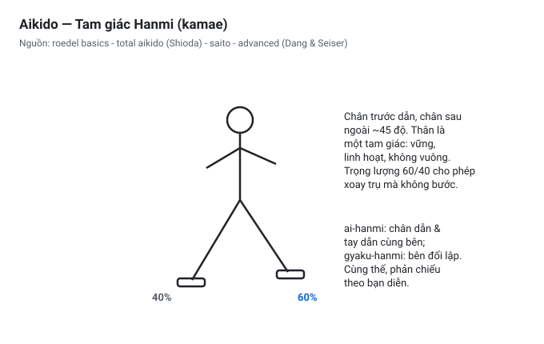
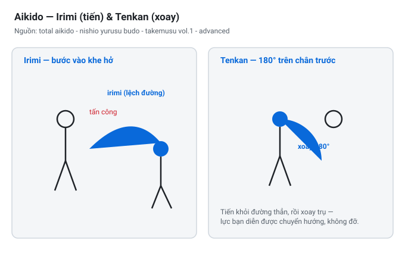
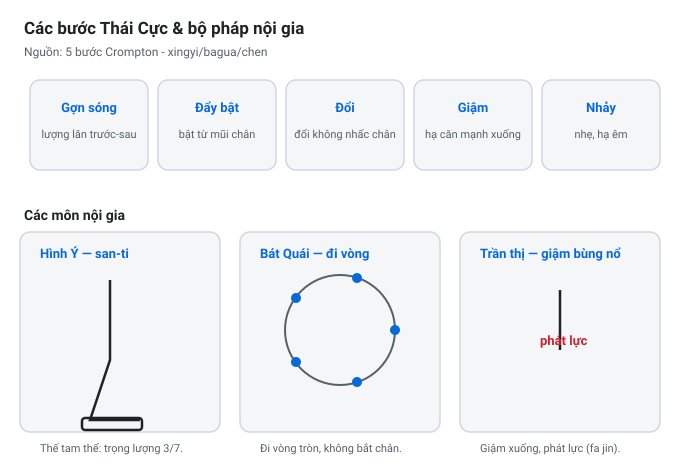
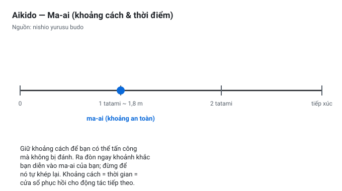
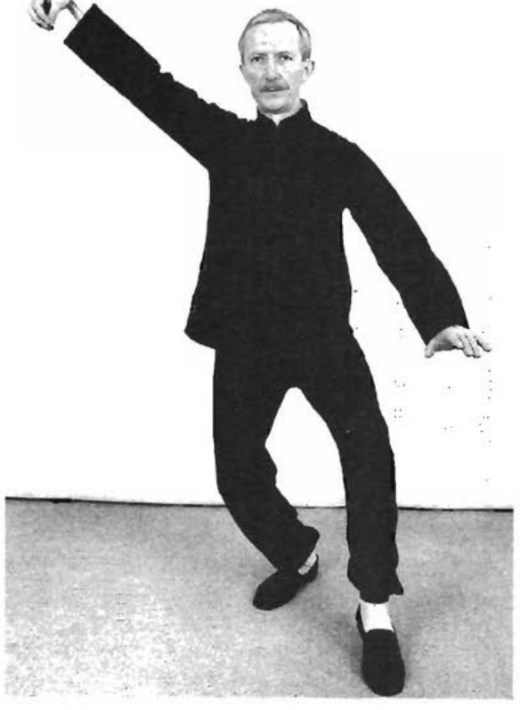
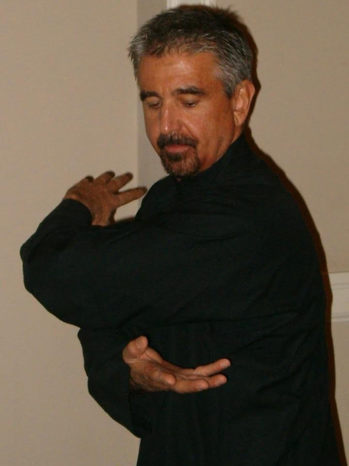

Sợi Dây Liên Kết: Tennis, Thái Cực và Võ Thuật
Dự án Nghiên cứu Bộ Pháp TFL đã đọc mười ba cuốn sách võ thuật - Thái Cực, Aikido, Xingyi, Bagua và Trần thức - và chuyển ngữ bộ pháp của chúng sang sân tennis. Sau mười bài song ngữ, một đường dây xuyên suốt hiện ra. Bài này nêu rõ đường dây ấy: bộ pháp tennis, bộ pháp Thái Cực và bộ pháp Aikido là cùng một môn rèn luyện nhìn từ ba cửa. Môn rèn luyện chung ấy có ba tên gọi - thăng bằng động, linh hoạt và phục hồi.

Ba Nguyên Lý, Một Sợi Dây
Mọi vấn đề bộ pháp trên sân tennis đều là thất bại của một trong ba điều. Người chơi mất thăng bằng, cứng khớp hông, hoặc phục hồi chậm. Võ thuật gọi ba thất bại ấy bằng từ vựng riêng, nhưng cơ học cơ thể hoàn toàn giống nhau:
- Thăng bằng động - một nền móng giữ vững trong khi di chuyển. Không phải đứng yên, mà là một trạng thái cân bằng đang chuyển động.
- Linh hoạt - hông và eo xoay, cuộn lại để bước chân được tiếp sức từ trung tâm, không phải từ chi.
- Phục hồi - bước chân kết thúc cũng là bước chân bắt đầu. Thế đứng không bao giờ giữ nguyên; nó liên tục được trả về.
1. Thăng Bằng Động
Tennis đòi hỏi thế đứng vận động: gối cong, trọng tâm thấp, sẵn sàng di chuyển mọi hướng. "Giữ thăng bằng" của huấn luyện viên là một mục tiêu động - thăng bằng là thứ bạn duy trì, không phải thứ bạn nắm giữ. Thái Cực gọi cùng ý ấy là căn bản ở bàn chân và sự phân biệt thực hư (xu và shi): mỗi khoảnh khắc một chân mang căn bản trong khi chân kia luôn sống và tự do di chuyển. Aikido xây cùng nền móng ấy thành thế đứng tam giác hanmi, thân xoay khỏi đường thẳng để tam giác chống đỡ hẹp, bám đất và sẵn sàng xoay. Ba ngôn ngữ, một bức tranh: một nền móng thấp, tập trung, đang di chuyển.


2. Linh Hoạt (và Sự Xoay Của Eo)
Sức mạnh trên sân đến từ mặt đất, vượt qua hông xoay, không phải từ cánh tay. "Sóng sức mạnh" là sự xoay hông và eo mà bước chân thiết lập và tải. Thái Cực đặt eo đầu trong chuỗi lực - "eo là chủ" - và dạy bước chân như một cuộn nội tại phát lực (fa jin) từ bàn chân. Irimi (tiến vào) và tenkan (xoay) của Aikido là cùng sự xoay ấy thành bộ pháp hai giai đoạn: bước khỏi đường thẳng, rồi xoay eo để đổi hướng. Linh hoạt ở đây không phải là giãn cơ; nó là tự do xoay của trung tâm.


3. Phục Hồi - Sự Trở Về Liên Tục
Bước đệm kết thúc và bước tiếp đã bắt đầu. Người chơi "đứng yên" giữa các cú đánh mất phản lực mặt đất mà sự phục hồi bảo toàn. Thái Cực cấm thế đứng song trọng - trọng lượng luôn phải sống ở một chân - và ma-ai của Aikido là khoảng cách sống quyết định khi nào bước, khi nào chờ. Phục hồi là kỷ luật của việc không bao giờ đến nơi; mỗi lần tiếp đất là một lần bước tiếp.

Từ Sách Vở: Chi Tiết Bộ Pháp Nguyên Bản
Đối chiếu trực tiếp với các tài liệu võ thuật nguyên bản trên Thư viện TaichiKB làm lộ rõ nền tảng cơ sinh học mà các hệ thống bộ pháp cùng chia sẻ với chuyển động quần vợt hiện đại:
- Phân Hư Thực và Năm Bước Thực Chiến (Thái Cực Quyền): Điểm thứ tư trong Thập Yếu của Dương Trừng Phủ khẳng định phân biệt Hư và Thực là bài học bộ pháp đầu tiên — một chân chịu tải ("Thực") bám đất cắm rễ, trong khi chân kia ("Hư") nhẹ nhàng, linh hoạt chuyển hướng tức thì. Lỗi nguy hiểm nhất là "Song Trọng" (50/50), khiến đôi chân bị khóa cứng và mất hoàn toàn khả năng phản xạ. Paul Crompton (Tai Chi Combat) hệ thống hóa 5 bước di chuyển: bước gợn sóng (wave) cuộn trọng tâm từ gót; bước đẩy bật (push-bounce) nén và phóng lực đàn hồi; bước đổi (change) hoán chuyển trọng lượng êm ái; bước giậm (stamp) cắm rễ phát kình; và bước nhảy (jump) tiếp đất thanh thoát.
- Bộ Pháp Vòng Tròn & Kỹ Thuật Khấu Bộ / Bãi Bộ (Bát Quái Chưởng): Theo Bát Quái Chưởng Toàn Thư (Tập 1, Chương 3) của Đại sư Park Bok Nam & Dan Miller, toàn bộ hệ thống được xây dựng quanh việc đi vòng tròn (Zǒu Quān) quanh trục đối thủ. Bàn chân trong luôn đi bám sát đường tiếp tuyến, trong khi bàn chân ngoài xoay chếch góc 45° vào trong để ôm cua đường tròn liên tục mà không đứt gãy kết nối cơ thể. Để đổi hướng tức thời, Bát Quái sử dụng hai cơ chế then chốt: Khấu Bộ (K'ou Pu / Hook Step) — quay mũi chân vào trong 45° đến 90° để khóa hông (kua), hãm quán tính và quay ngược hướng; cùng với Bãi Bộ (Pai Pu / Swing Step) — mở mũi chân ra ngoài để mở rộng khung bệ và đổi trục di chuyển. Đây chính là nguyên lý đứng sau các bước hồi phục xoay vòng (circular recovery) và cắt góc bóng chữ V (V-cut) trên sân quần vợt.
- Thế Đứng Tam Thể Thức 3/7 (Hình Ý Quyền): Trong Xing Yi Nei Gong (Dan Miller & Tim Cartmell), thế đứng trụ Tam Thể Thức (San Ti Shi) rèn luyện tỷ lệ phân bố trọng lượng nghiêm ngặt 3/7 (70% chân sau, 30% chân trước). Chân sau chùng gối nén lực như một đòn bẩy thủy lực, sẵn sàng phát nổ cú đạp thẳng đẩy thân về phía trước — cơ chế trực tiếp của bước bứt tốc đầu tiên (first step push-off) khi lao lên cứu bóng ngắn.
- Đế Tam Giác Hanmi & Cặp Động Tác Irimi–Tenkan (Aikido): Trong các trước tác của Gozo Shioda (Total Aikido), Morihiro Saito và Bodo Roedel (Aikido — The Basics), tư thế chuẩn bị (Kamae) mở ra thế chân Hanmi hình tam giác với góc mở 60°–90° và tỷ lệ 60/40, không bao giờ nhấc gót chân sau. Cặp chuyển động Irimi (nhập thân thẳng lướt vào khoảng trống) và Tenkan (xoay 180° quanh trục chân trước) kết hợp thành Tai Sabaki — cho phép đón nhận và chuyển hóa các xung lực cực mạnh mà không cần phanh hãm thô bạo. Đồng thời, Ma-ai (khoảng cách sống) định đoạt chính xác thời điểm bước chân đón bóng và thực hiện bước đệm split-step.


Tennis Without Talent: Thế Đứng và Thăng Bằng
Trang Tennis Without Talent - Stance và Balance mô tả cùng ba nguyên lý bằng ngôn ngữ thuần tennis. Đọc chúng bên cạnh võ thuật cho thấy sự khác biệt giữa một tư thế sẵn sàng tennis và một nền móng Thái Cực hay Aikido thật nhỏ bé.
| Tennis Without Talent | Thái Cực | Aikido |
|---|---|---|
| Thế đứng: gối cong, trọng tâm thấp, sẵn sàng mọi hướng (thăng bằng động) | Căn bản ở bàn chân; trọng lượng thực hư để một chân luôn sống | Nền tam giác hanmi, thân xoay khỏi đường thẳng |
| Thăng bằng như "sóng sức mạnh" - đất đến hông đến tay (linh hoạt) | Eo là chủ; fa jin phát từ bàn chân | Irimi tiến + tenkan xoay: xoay vào bộ pháp |
| Thăng bằng giữ bằng điều chỉnh liên tục, không giữ thế (phục hồi) | Không bao giờ song trọng; trọng lượng luôn sống | Ma-ai: khoảng cách sống định thời bước |
Sự khớp nhau chính xác. "Thăng bằng động" là căn bản Thái Cực và hanmi Aikido. "Sóng sức mạnh" là eo-chủ Thái Cực và tenkan Aikido. "Điều chỉnh liên tục" là lệnh cấm song trọng của Thái Cực và ma-ai Aikido. Huấn luyện viên tennis và bậc thầy võ thuật đang mô tả một cơ thể.
Điểm Nhấn Cho Sân Đấu
- Xây một nền móng thấp, tập trung, di chuyển - bước đệm là hanmi của bạn.
- Tiếp sức bước chân từ sự xoay hông, không phải từ cái với - eo là chủ của bạn.
- Đừng bao giờ đến nơi; hãy phục hồi vào bước tiếp - giữ trọng lượng sống, như Thái Cực cấm song trọng và Aikido giữ ma-ai.
Sách Nguồn
Mười ba cuốn sách nguồn (Thái Cực, Aikido, Xingyi, Bagua, Trần) được đọc trong thư viện song ngữ taichinow. Mười bài TFL mỗi bài lấy một cuốn sách hoặc chủ đề và chuyển ngữ bộ pháp của nó sang tennis. Các sơ đồ và bản hình trong trang này là tác phẩm gốc của Dự án Nghiên cứu Bộ Pháp TFL, với bản quét nguồn ghi công taichinow.github.io.
Dự án Nghiên cứu Bộ Pháp TFL | Căn Bản ở Bàn Chân - Dương Thành Phu →
Bước Đệm: Nạp, Giải Tải, Chuyển Hướng - ba nhiệm vụ của động tác nhỏ nhất →